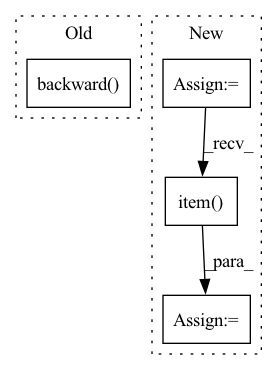

Pattern ID :10790
Before Change
Z = self.model(X)
loss = F.mse_loss(Z, y)
self.optimizer.zero_grad()
loss.backward()
self.optimizer.step()
total_loss += loss.item()
self.model.eval()
total_score = 0.0After Change
Z = self.model(X)
self.optimizer.zero_grad()
device = Z.device
loss_val = torch.tensor(
0.0,
dtype=torch.float32,
device=device,
)
for (i, loss) in enumerate(self.losses):
weight = self.weight_per_loss[i]
loss_val += weight * loss(Z, y)
loss_val.backward()
self.optimizer.step()
total_loss_val += loss_val.item()
self.model.eval()
total_score = 0.0
for (X, y) in tqdm(self.val_dataloader):
Z = self.model(X)In pattern: SUPERPATTERN
Frequency: 4
Non-data size: 4
Instances Fragment ID: 37160647
Project Name: takuyashintate/tsts
Commit Name: f6b4e65e1ac0679b4951c401c8e2504e4fde4c4a
Time: 2021-08-17
Author: kmdbn2hs@gmail.com
File Name: tsts/trainers/trainer.py
M Class Name: SupervisedTrainer
N Class Name: SupervisedTrainer
M Method Name: step(1)
N Method Name: step(1)
M Parent Class: Trainer
N Parent Class: Trainer
M File Name: tsts/trainers/trainer.py
N File Name: tsts/trainers/trainer.py
M Start Line: 51
M End Line: 58
N Start Line: 61
N End Line: 76
Before Change
loss = self.criterion(estimated_sources_amplitude, sources)
self.optimizer.zero_grad()
loss.backward()
if self.max_norm:
nn.utils.clip_grad_norm_(self.model.parameters(), self.max_norm)
After Change
s += " {:.5f}".format(mean_loss.item())
else:
for idx, target in enumerate(self.sources):
loss_target = loss[idx]
s += " ({}) {:.5f}".format(target, loss_target.item() )
print(s, flush=True)
Fragment ID: 37160644
Project Name: tky823/dnn-based_source_separation
Commit Name: 84cad5184ccab316e3675dc3f6c07c11e5d09277
Time: 2021-10-29
Author: delta9guitar97@gmail.com
File Name: egs/musdb18/x-umx/src/adhoc_driver.py
M Class Name: AdhocSchedulerTrainer
N Class Name: AdhocSchedulerTrainer
M Method Name: run_one_epoch_train(2)
N Method Name: run_one_epoch_train(2)
M Parent Class: TrainerBase
N Parent Class: TrainerBase
M File Name: egs/musdb18/x-umx/src/adhoc_driver.py
N File Name: egs/musdb18/x-umx/src/adhoc_driver.py
M Start Line: 120
M End Line: 148
N Start Line: 139
N End Line: 182
Before Change
raise NotImplementedError
policy_loss_value = policy_loss.detach().cpu().numpy()
self.policy_optimizer.zero_grad()
policy_loss.backward()
self.policy_optimizer.step()
//compute value loss
v_loss = F.mse_loss(curr_state_v, future_return_batch)After Change
//entropy loss
entropy_loss = -torch.mean(-new_log_pi) * self.entropy_coeff
entropy_loss_value = entropy_loss.item()
//compute policy loss
if self.policy_loss_type == "clipped_surrogate":
surrogate1 = advantages * ratio_batch Fragment ID: 37160643
Project Name: x35f/unstable_baselines
Commit Name: f41e2cf788d0214add3fb342aee698910c63e651
Time: 2021-04-01
Author: 1621322691@qq.com
File Name: ppo/model.py
M Class Name: PPOAgent
N Class Name: PPOAgent
M Method Name: update(2)
N Method Name: update(2)
M Parent Class: BaseAgent,torch.nn.Module
N Parent Class: BaseAgent,torch.nn.Module
M File Name: ppo/model.py
N File Name: ppo/model.py
M Start Line: 83
M End Line: 126
N Start Line: 79
N End Line: 137
Before Change
mix_data[x]["rdf_range"],
f"{model_path}/x_{x}_{str(i).zfill(3)}_rdf.pdf")
loss.backward()
optimizer.step()
optimizer.zero_grad()
print(loss.item())After Change
_, _, sim_rdf12 = train_sys[x].rdf12(q_t)
_, _, sim_rdf22 = train_sys[x].rdf22(q_t)
loss_ = (sim_rdf11 - torch.Tensor(train_sys[x].target_rdf11).to(device) ).pow(2).mean() + \
(sim_rdf12 - torch.Tensor(train_sys[x].target_rdf12).to(device) ).pow(2).mean() + \
(sim_rdf22 - torch.Tensor(train_sys[x].target_rdf22).to(device) ).pow(2).mean()
all_rdf11.append(sim_rdf11)
all_rdf12.append(sim_rdf12)
all_rdf22.append(sim_rdf22)
loss_.backward()
loss += loss_.item()
optimizer.step()
optimizer.zero_grad()
Fragment ID: 37160649
Project Name: torchmd/mdgrad
Commit Name: 4a43676cd6950ce8bf34276d9c4fefcd081b35d7
Time: 2022-01-28
Author: wwj@mit.edu
File Name: scripts/fit_mix.py
M Class Name: AnonimousClass
N Class Name: AnonimousClass
M Method Name: run_mix(1)
N Method Name: run_mix(1)
M Parent Class:
N Parent Class:
M File Name: scripts/fit_mix.py
N File Name: scripts/fit_mix.py
M Start Line: 199
M End Line: 230
N Start Line: 202
N End Line: 250